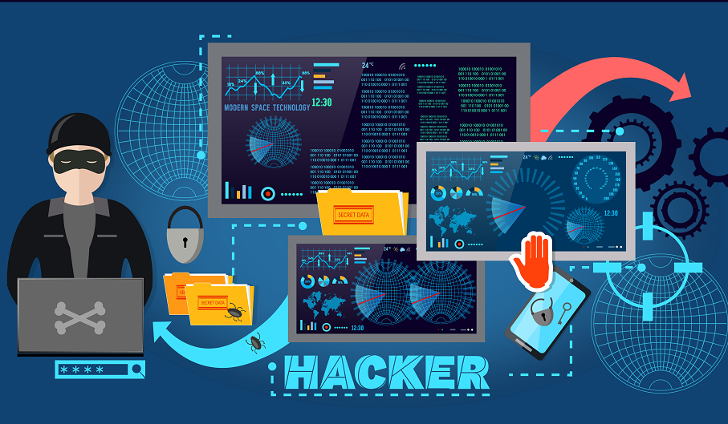

C'est quoi un Ingéieur en sécurité informatique ??
Un ingénieur sécurité (ou ingénieur en sécurité informatique) est un professionnel spécialisé dans la protection des systèmes informatiques, des réseaux et des données contre les cyberattaques, les menaces internes, et les autres vulnérabilités. Son rôle est essentiel pour garantir la confidentialité, l'intégrité, et la disponibilité des informations au sein d'une organisation. Il conçoit et met en œuvre des stratégies et des solutions de sécurité pour défendre les infrastructures informatiques contre les menaces croissantes dans le paysage numérique.
Ses rôles
| Évaluation des Risques et des Vulnérabilités | Conception et Mise en Œuvre de Solutions de Sécurité | Surveillance et Réponse aux Incidents |
 |  |  |
| Audit de Sécurité : Effectue des audits réguliers des systèmes et des réseaux pour identifier les failles de sécurité et évaluer le niveau de risque. Utilise des outils de scan de vulnérabilités, comme Nessus ou Qualys, pour détecter les points faibles. | Développement de Politiques de Sécurité : Établit des politiques et des procédures de sécurité, y compris des stratégies de gestion des accès, des mots de passe, et des protocoles de sauvegarde et de récupération | Surveillance Continue : Utilise des systèmes de surveillance de la sécurité (comme SIEM - Security Information and Event Management) pour surveiller les activités réseau et système en temps réel, détecter les comportements suspects, et réagir rapidement aux incidents. |
Retour au sommaire